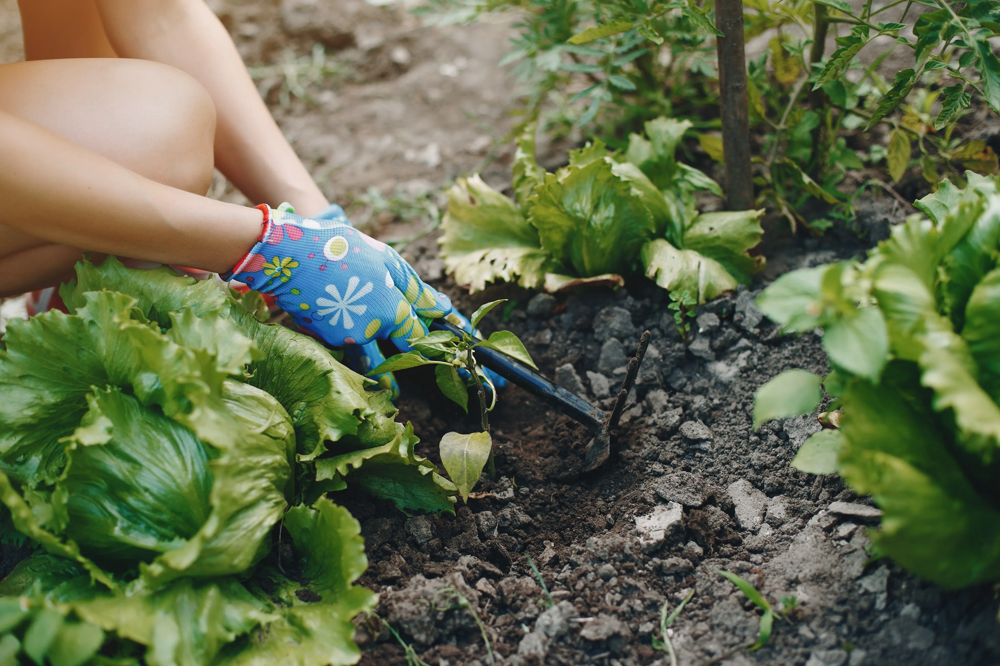

Min Lille Køkkenhave
Start din egen køkkenhave
Drømmer du om at plukke dine egne friske krydderurter, nyde sprøde salater direkte fra potten, eller smage solmodne tomater, du selv har dyrket men har du kun en lille altan, en smal terrasse eller måske blot en vindueskarm at gøre godt med? Så er du kommet det helt rette sted hen. Her finder du masser af inspiration, praktiske guides og simple tips til, hvordan du kan skabe din helt egen grønne oase selv på meget lidt plads. Uanset om du bor i lejlighed midt i byen eller blot har et hjørne i køkkenet, er der rig mulighed for at dyrke dine egne spiselige planter. Det kræver hverken grønne fingre, dyre redskaber eller særlig erfaring. Bare lysten til at komme i gang. En køkkenhave behøver ikke være stor for at være givende den skal bare være din.
